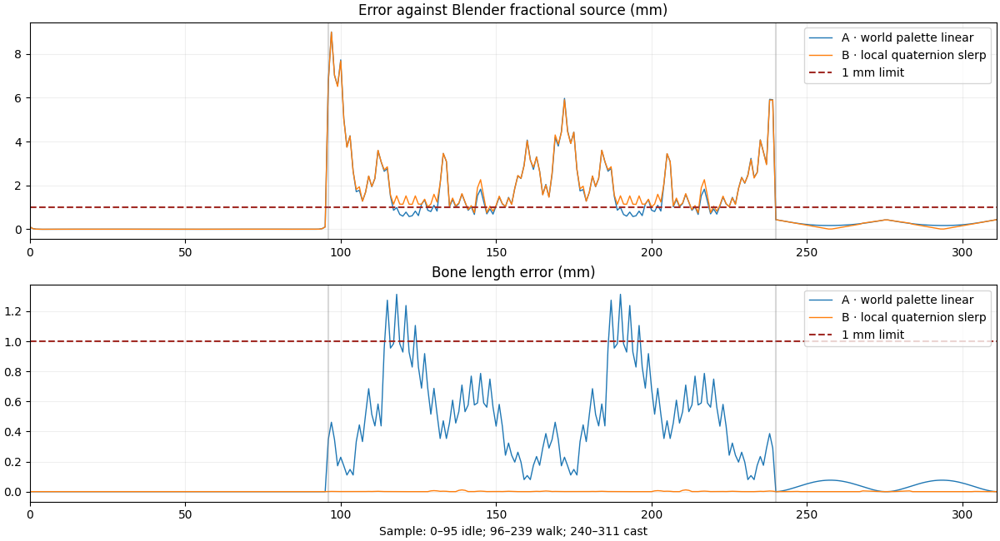

Godot is the shipping target; Pixi is the test harness. Neither candidate passes the registered source gate, so no consumer or raster expansion was run. All original integer palettes remain exact.
| Metric | A · world palette linear | B · local quaternion slerp | Limit |
|---|---|---|---|
| Maximum source position error | 8.992 mm — FAIL | 8.985 mm — FAIL | ≤1 mm |
| Maximum bone-length error | 1.312 mm — FAIL | 0.0121 mm — PASS | ≤1 mm |
| Maximum planted-foot drift | 0.00242 mm — PASS | 0.5073 mm — PASS | ≤20 mm |
| Fractional samples failing a gate | 116 / 312 | 136 / 312 | 0 |

B preserves bone lengths and contact, but does not reproduce the source between keys. Read-only inspection confirms every source key uses BEZIER interpolation. The original source’s between-key walk also dips 1.461 mm below the floor, exceeding the 1 mm limit; its integer-frame pass never qualified those intermediate poses.
The next test will make interpolation explicit in a new source copy while preserving all key times, values, integer poses, frame counts and original files. A linear channel / normalized quaternion contract will be checked independently before any runtime adoption. This is a proposed repair, not a passing result. The two-candidate limit here remains closed.
Report · Receipt · Candidate A · Candidate B · Actual source curve inventory · Preserved runtime contact failure